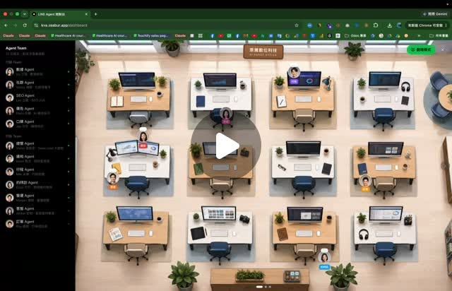

樊松蒲 Dennis｜Agent 團隊後台：把多 Agent 做成有畫面感的企業工作介面

一句話摘要
這則 Threads 的價值在於：它把「多 Agent orchestration」從抽象的 Claude 對話與終端機 session，翻譯成企業與學員看得懂的「辦公室 / 團隊 / 會議」介面。
貼文重點
作者 tbr.digital 表示：
- 這套 Agent 團隊雛形是在搭公車路上開發，後續逐漸完善。
- 當 agent 停留在 Claude 裡，同學很難想像其強大與未來性，缺乏畫面感。
- 因此做了一套自己習慣用的 Agent 介面。
- 目前與 @cab_late 合作優化整套架構，朝企業端本地部署或雲端部署模式前進。
- 企業用戶首先會卡在資安。
- 做這套後台的過程中，作者摸過資料治理、資安、權限、記憶模式、Skill 協作、企業知識庫等議題。
- 最花 token 的反而是產生好看的 Agent 頭像。
圖片觀察
封面是一個瀏覽器中的「LINE Agent 團隊」式後台：
- 中央是俯視辦公室，每個辦公桌代表一位 agent。
- 左側 sidebar 是 Agent Team 清單，可見多個 agent 頭像與角色。
- 不同座位上有 avatar、狀態標記與工作桌，形成「agent 在公司上班」的空間隱喻。
- 這比較像「視覺化操作層 / 控制台」，不是單純 chatbot 列表。
留言裡補出的架構線索
留言討論提到幾個值得保存的技術判讀：
- 辦公室模式：用 12 個座位表達 12 個 agent instance 與狀態。
- Dashboard 模式：聚合 token、成本、執行次數、記憶/知識庫用量、skill 協作圖等資料。
- 會議模式：人類 → 總召 agent → 分發 → 專業 agent → 工具調用 → 回報 → 總結。
- 可能的前端：Next.js / React / Canvas，狀態用 WebSocket 推送。
- 可能的後端：Orchestrator + router + agent 定義層。
- 每個 agent 可包含 system prompt、memory、skills、知識庫權限。
- 企業部署需要考慮雲端 / 本地模型、向量庫、Docker 化與資料邊界。
以上留言是社群推測，不等同作者正式技術文件；但它很好地捕捉了多 Agent 後台產品化會遇到的結構問題。
為什麼值得收藏
對欒帥的課程與 Hermes 生態，這則可作為「Agent 介面設計」案例：
- 教學時，抽象 agent 比較難理解；具象辦公室可讓學員立刻看見角色分工。
- 企業導入時，管理者關心的不是 prompt，而是權限、資料來源、成本、稽核、責任歸屬。
- Agent 後台若能顯示狀態、成本、skill、知識庫、任務 log，就能從 demo 走向治理工具。
- 「會議模式」提醒我們：多 Agent 不只是平行處理，也需要主持、交接、決策與中止機制。
風險與設計提醒
- UI 可愛不代表 orchestration 可靠；需要任務成功率、錯誤處理、人工介入與稽核紀錄。
- 企業本地部署不能只換成本地模型，還要處理知識庫權限、資料分類、使用者角色與 audit log。
- 多 agent 會議容易消耗 token 與 realtime API 成本，需設時間、輪次與成本上限。
- Agent 頭像與擬人化能降低理解門檻，但也可能讓使用者高估 agent 的自主性與可信度。